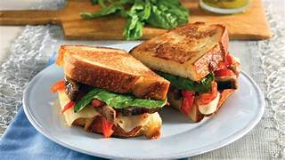
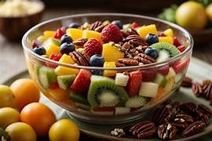
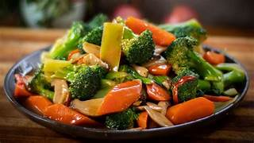

Welcome to your Smart Refrigerator Dashboard! Here you can see items, add new items, and view fridge info.

Healthy and delicious sandwich using fresh vegetables from your fridge.

Refreshing fruit salad with seasonal fruits. Perfect for breakfast or snack.

Quick and easy stir fry using leftover veggies in your fridge. Nutritious meal!